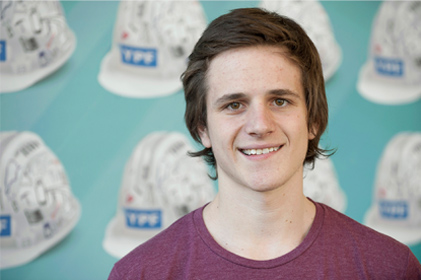
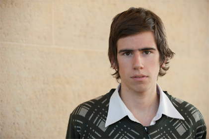

El presidente y CEO de YPF, Miguel Galuccio, dialogó con 150 becarios de los programas de Becas de la Fundación YPF y del Bicentenario, a quienes les transmitió su visión de la industria y la importancia para la Argentina de formar una nueva generación de profesionales. Lo hizo en el marco del 1° Encuentro Nacional de Becarios, que finalizó el pasado 24 de mayo en la sede de la petrolera en Buenos Aires.
Ante un auditorio colmado de egresados de escuelas técnicas, provenientes de todo el país, Galuccio dijo: "Esta es una oportunidad única para ustedes. Tenemos el objetivo, desde la Fundación YPF, de formar una nueva generación de profesionales de la industria del petróleo y el gas".
"¿Qué se necesita para desarrollar los recursos de petróleo?", preguntó Galuccio a los becarios. "Inversión y tecnología –respondió-, pero, por sobre todo, se necesita gente. La industria del petróleo requiere mucho capital y la tecnología es fundamental para el desarrollo eficiente de los recursos, pero la gente es la clave. Se necesitan entre 50 y 100 personas para perforar un pozo, se necesitan geólogos, ingenieros, mano de obra profesional de primer nivel que investiguen, desarrollen y puedan tomar riesgos."
El acto contó con la presencia de la Subsecretaria de Gestión y Coordinación de Políticas Públicas Universitarias, Laura Alonso, el director nacional de Educación Técnico Profesional y Ocupacional del INET, Gustavo Peltzer, y autoridades de la Fundación YPF y decanos de universidades nacionales.
Al finalizar su presentación, Galuccio dialogó extensamente con los becarios presentes, les relató sus primeros pasos como estudiante universitario y luego como profesional y respondió preguntas relacionadas con diferentes temas de la actualidad de la compañía. Posteriormente, un ingeniero, un geólogo y una licenciada en Química de YPF compartieron sus historias de vida, que fueron muy valoradas para los futuros profesionales de la industria.
Galuccio recordó sus estudios en la universidad técnica de Paraná, Entre Ríos, y contó emocionado que recibió un préstamo de honor para poder estudiar. "Tienen acceso a algo que yo tuve y voy a agradecer toda mi vida", dijo a los estudiantes. Los chicos quisieron saber de su vuelta al país. "Era una oportunidad única para un profesional: poder liderar una compañía como ésta que tiene tanto impacto en el futuro de un país", les contó. Y los despidió: "Tienen una oportunidad única y posiblemente, en algún momento, los veamos trabajando en YPF".
El Programa de Becas de la Fundación YPF tuvo una convocatoria de más de 2000 postulantes. Entre las carreras con mayor cantidad de aspirantes se destacaron las ingenierías en Química, Electromecánica, Electrónica, Geología y Petróleo. La mayoría de los candidatos provinieron de las provincias de Mendoza, Neuquén y Buenos Aires. La selección estuvo a cargo de un comité, integrado por profesionales de reconocida trayectoria.
Esta iniciativa se desarrolló en conjunto con la Subsecretaría de Gestión y Coordinación de Políticas Universitarias y el Instituto Nacional de Educación Tecnológica (INET), y forma parte del nuevo programa de incentivo a la educación superior de la Fundación YPF, que tiene como objetivo incrementar el ingreso, la permanencia y la graduación de estudiantes en carreras que son estratégicas para el desarrollo productivo y tecnológico del país.
El 1° Encuentro de Nacional de Becarios fue inaugurado, el jueves 23 de mayo, en el Ministerio de Educación de La Nación, por el ministro Alberto Sileoni. El acto contó, además, con la participación del secretario de Educación de la Nación, Jaime Perczyk y el director ejecutivo del INET.
Durante ese acto, el ministro remarcó la importancia del trabajo de la Fundación YPF a la hora de "alentar las vocaciones de geofísicos, geólogos e ingenieros".
Sonrientes y emocionados, contagiaban entusiasmo: Natalia, Jimena, Enzo, Leandro y Gastón son cinco de los primeros 100 jóvenes que recibieron las Becas Fundación YPF para estudiar carreras universitarias vinculadas a la industria energética.
Cuando descubrió que la Ingeniería en petróleo era lo suyo, Leandro Valeiro, fue a anotarse a la universidad privada donde se dictaba. Pero rápidamente se dio cuenta que no podía pagar la cuota. Unos meses después, cuando se enteró que la carrera empezaría a dictarse en la Universidad Nacional Arturo Jauretche, sintió que era un guiño del destino.
La carrera llegó a esa universidad de la mano del acuerdo que la casa de estudios firmó con la Fundación YPF y la convirtió en la primera universidad nacional del conurbano en ofrecer esta currícula. Cuando lo llamaron de la universidad para proponerle que se postulara en las becas, ni lo dudó. La suerte volvió a darle la derecha: es uno de los 100 ganadores.
Leandro vive con sus padres y hermanos en Berazategui. Hijo de un papá chapista y una mamá comerciante, Leandro es el primero de la familia que cursa la universidad. Su hermano vive en Bariloche y el sueña ir a trabajar a algún destino remoto una vez que se reciba. “Esta beca nos ayuda a seguir”, aseguró.
Sonrientes y emocionados, contagiaban entusiasmo: Natalia, Jimena, Enzo, Leandro y Gastón son cinco de los primeros 100 jóvenes que recibieron las Becas Fundación YPF para estudiar carreras universitarias vinculadas a la industria energética.
"Estoy aprendiendo a estudiar y estoy aprendiendo a… vivir", confió Enzo Zorzi Ruggiero. A los 18 años dejó su casa paterna en Santa Rosa, La Pampa, para estudiar Física en Bahía Blanca. Lo separan de su casa 300 kilómetros. "Me costó mucho estar solo pero de a poco me voy acomodando", dijo Enzo, el mayor de cuatro hermanos.
Hijo de un farmacéutico y un ama de casa, Enzo sabe que la carrera que eligió es más que original. "Siempre me gustó saber el porqué de las cosas. Me gusta la Física aplicada", contó. Un compañero que estudia Geología le contó de la beca y se postuló. "Estaba en Santa Rosa cuando me llamaron. Además del apoyo económico, sentís que estás entre 100 personas en las que confían –dijo-. Me dan ganas de estudiar, es una razón más."
Sonrientes y emocionados, contagiaban entusiasmo: Natalia, Jimena, Enzo, Leandro y Gastón son cinco de los primeros 100 jóvenes que recibieron las Becas Fundación YPF para estudiar carreras universitarias vinculadas a la industria energética.
Gastón Alarcón nació en Goya, Corrientes, y es el único de los becados que estudia en la Universidad Técnica Nacional de Resistencia, en el Chaco. Estudia Ingeniería en Electromecánica. La salida laboral amplia en la región lo tentó. A los 20 años, Gastón sigue los pasos de su papá, su hermano y su tío. "Mi idea es quedarme ahí después de recibirme, pero hay que ver dónde termino", señaló.
Vive en resistencia con el hermano que cursa el quinto año de la carrera: tiene la respuesta a sus consultas en su propia casa. Un tío que trabaja en la planta de Barranqueras de YPF le contó de la beca. Se anotó por Internet en febrero y lo llamaron hace unos días. "Me sorprendió muchísimo. Te motiva para recibirte", afirmó.
Sonrientes y emocionados, contagiaban entusiasmo: Natalia, Jimena, Enzo, Leandro y Gastón son cinco de los primeros 100 jóvenes que recibieron las Becas Fundación YPF para estudiar carreras universitarias vinculadas a la industria energética.
"Mi papá me levantó de la cama para que me inscribiera, apenas se enteró de las becas", dijo riéndose Jimena Moreno. Es de Caleta Olivia, Santa Cruz, pero estudia Química en Córdoba. Decidió mudarse de provincia para vivir con ella y ahorrarse así el alquiler que suponía estudiar en Río Gallegos.
"Estoy recontenta con la beca. Además de la ayuda económica, que es de mucha ayuda para mí, es un empujón fuerte para estudiar", comentó la flamante alumna universitaria de 19 años. Descubrió la vocación en el secundario y se fue enganchando con el correr de los meses. "Me gusta la química y sé que va a tener buena salida laboral en el Sur. Mi idea es volver, claro", agregó.